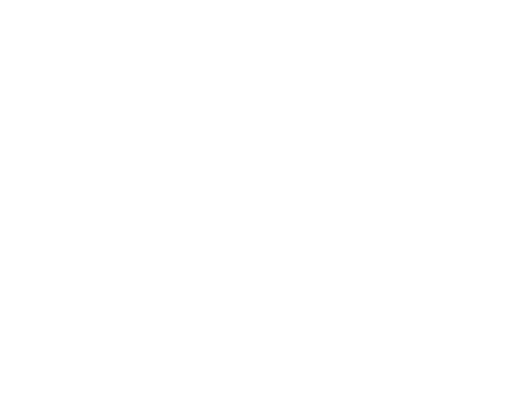
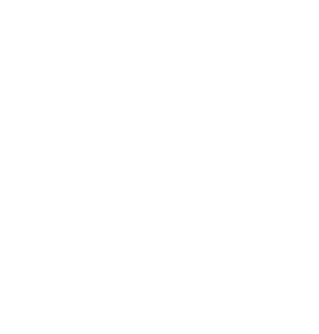
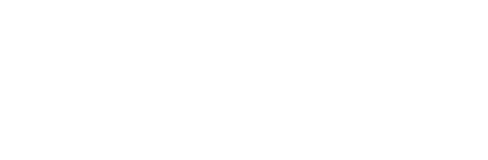

Human Before Hardware
Technology changes constantly. Human needs, fears, motivations, and rituals move at a different speed. Strong products respect both.
Meet the Architect
For more than two decades, I have helped organizations imagine what people will want before those products, platforms, and behaviors become mainstream.
My career lives at the intersection of emerging technology, entertainment, design, and product strategy. From interactive television and streaming media to virtual reality, autonomous vehicles, connected software platforms, and electronic music culture, I have repeatedly found myself building products where no roadmap existed.
The throughline
The most interesting work begins before the category is settled, before the customer language exists, and before anyone can point to a proven playbook.
Building what does not exist yet
My career began producing interactive television experiences long before streaming became the norm. Since then, I have helped launch products spanning broadcast television, Hollywood studios, immersive entertainment, enterprise software, connected vehicles, and emerging technologies.
I have worked with global organizations including Ford Motor Company, Disney, 20th Century Fox, Discovery, Google, Microsoft, Publicis Groupe, Jaunt, WEVR, and startups transforming ambitious ideas into products that customers could understand, adopt, and use.
At Ford, my work has included autonomous vehicle experiences, connected services, software platforms, the Center of Software, software distribution, and product strategy across complex systems.
Today, that same philosophy drives Sentient Productions: helping artists, organizations, and founders discover clear positioning, memorable experiences, and sustainable product strategies.
I make ambiguity useful. Then I turn it into something people can see, understand, and move toward.
Product philosophy
Technology changes constantly. Human needs, fears, motivations, and rituals move at a different speed. Strong products respect both.
I look beyond the screen or deliverable to understand the people, processes, incentives, platforms, and dependencies surrounding it.
A strategy becomes useful when people can recognize themselves inside it. Clear narrative turns complexity into momentum.
When certainty is impossible, make the idea tangible. Rapid experiments replace abstract debate with evidence and learning.
The best work is not performed at people. It is built with the people who will create, operate, support, and live with it.
A technically impressive product that cannot be understood, trusted, or integrated into real behavior is unfinished.
Selected highlights
Mobility + software
Product strategy across autonomous vehicle experiences, connected services, software platforms, developer ecosystems, enterprise software delivery, and software distribution.
Immersive media
Helped bring immersive experiences to Meta, HTC Vive, PlayStation, DreamWorks, Discovery, Google Daydream, Microsoft Mixed Reality, Steam, and 20th Century Fox.
Connected entertainment
Designed early interactive experiences for FOX, Discovery Channel, STARZ Encore, Lexus, and other national brands during the evolution of connected television.
The working method
Combining design thinking, product management, storytelling, systems design, research, and innovation frameworks to help organizations navigate uncertainty without sanding away the original idea.
Recognition
Contributed to work recognized with an Interactive Emmy nomination.
Launched experiences across entertainment, gaming, mobility, enterprise software, and immersive technology ecosystems.
Repeatedly entered spaces before standards, customer expectations, and common product language were fully formed.
Aligned business, design, engineering, production, research, marketing, and creative teams around a shared product direction.
Beyond technology
Outside enterprise product work, I have spent years producing events, supporting electronic music artists, developing creative brands, curating music, and building communities around culture.
I have produced live events involving internationally recognized talent including Iman and Britney Spears, while continuing to support independent artists through strategy, branding, positioning, event production, and experience design.
Sentient Productions brings those worlds together: disciplined product thinking, cultural intelligence, narrative clarity, and a willingness to build the thing that does not yet have a neat category.
Selected experience
Organizations where I held product, strategy, production, innovation, or experience leadership roles.




A selection of products, platforms, and brands I have helped bring to life throughout my career.


Why Sentient Productions?
Whether you are building software, launching a company, developing an artist, or exploring an entirely new market, success depends on creating clarity before creating features.
That is what I do.
Let’s Build Something Worth Remembering hello@sentientproductions.com